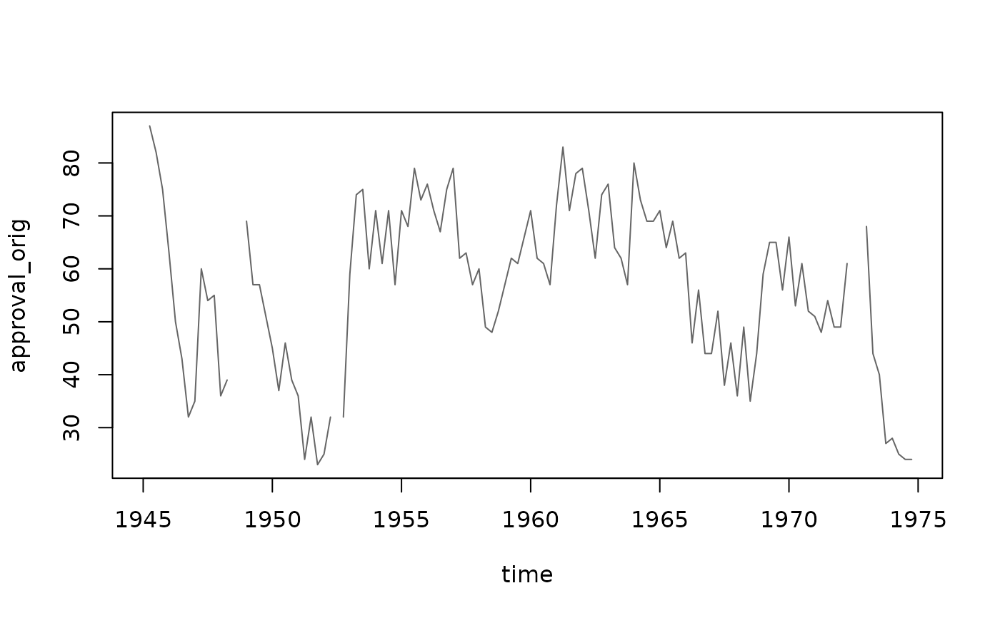
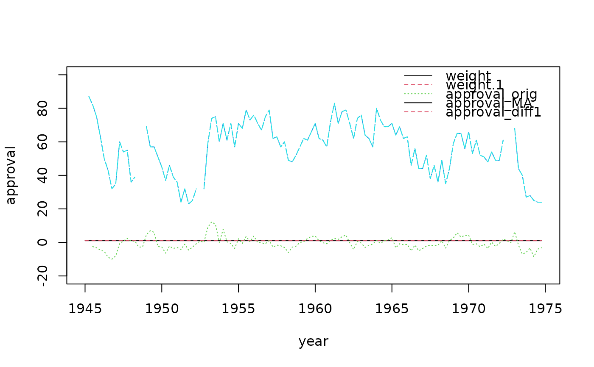
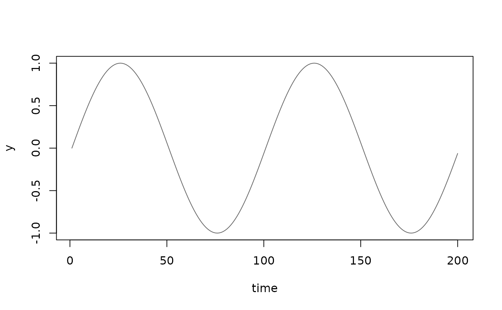
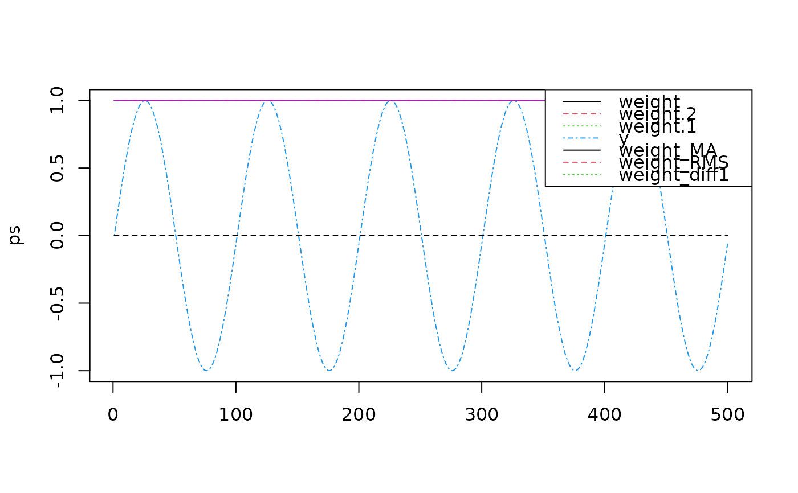
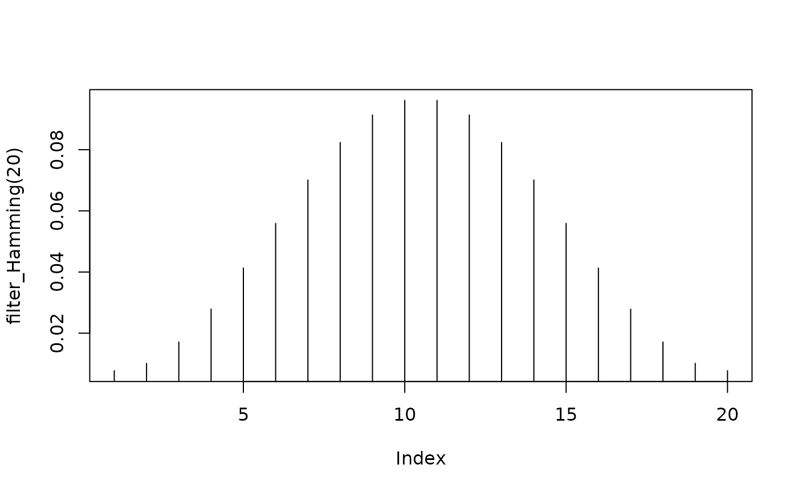
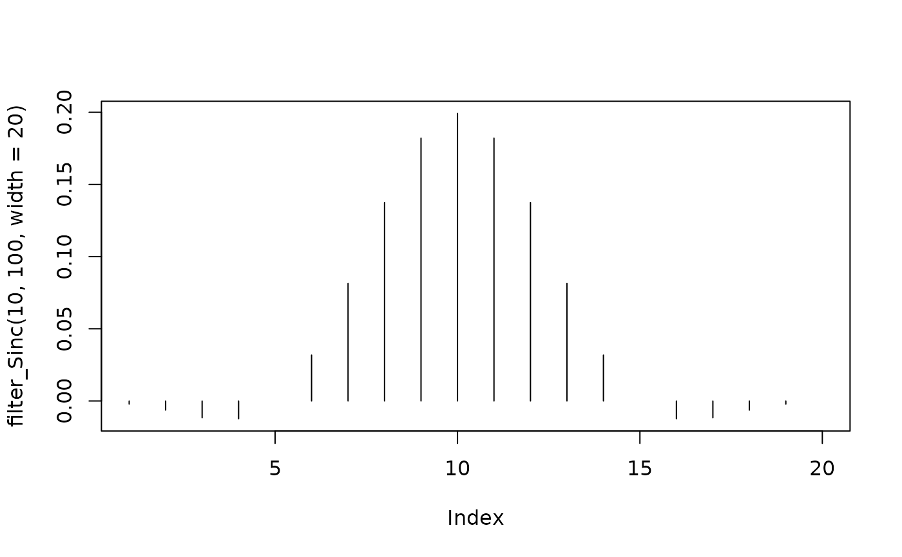

Applies a filter (i.e., a convolution with a filter kernel) to a data stream.
Usage
DSF_Convolve(
dsd = NULL,
dim = NULL,
kernel = NULL,
pre = NULL,
post = NULL,
na.rm = FALSE,
replace = TRUE,
name = NULL
)
filter_MA(width)
filter_Hamming(width)
filter_diff(lag)
filter_Sinc(fc, fs, width = NULL, bw = NULL)
pow2(x)Arguments
- dsd
An object of class DSD.
- dim
Columns to which the filter is applied. The default is all columns.
- kernel
A numeric vector of filter weights.
- pre, post
Functions applied before and after the convolution.
- na.rm
Logical; should missing values be ignored?
- replace
Logical; should the original column be replaced? If
FALSE, the convolved column is added.- name
Character string used to name a new column. The new name combines the original column name,
_, andname.- width
filter width.
- lag
an integer indicating which time lag to use.
- fc
cutoff frequency.
- fs
sampling frequency.
- bw
transition bandwidth.
- x
values to be squared.
Details
A filter kernel is a vector of weights. Several filters are provided.
filter_MA(width)creates a moving average.filter_diff(lag)calculates lagged differences. Usingna.rm = TRUEcan introduce artifacts and is not recommended.filter_Hamming(width)creates a Hamming window.filter_Sinc(fc, fs, width, bw)creates a windowed-sinc filter. Use eitherwidth(filter length) orbw(transition bandwidth) to control the filter roll-off. The relationship is \(width = 4/bw\). See Chapter 16 in Smith (1997).
pre and post are functions called before and after the convolution. For
example, use pre = pow2 and post = sqrt to calculate the RMS. pow2() is
a convenience function.
References
Steven W. Smith, The Scientist and Engineer's Guide to Digital Signal Processing, California Technical Pub; 1st edition (January 1, 1997). ISBN 0966017633, URL: https://www.dspguide.com/
See also
stats::filter provides non-streaming convolution.
Other DSF:
DSF(),
DSF_Downsample(),
DSF_ExponentialMA(),
DSF_FeatureSelection(),
DSF_Func(),
DSF_Scale(),
DSF_dplyr()
Examples
data(presidents)
## Example 1: Create a data stream with three copies of president approval ratings.
## We will use several convolutions.
stream <- data.frame(
approval_orig = presidents,
approval_MA = presidents,
approval_diff1 = presidents,
.time = time(presidents)) %>%
DSD_Memory()
plot(stream, dim = 1, n = 120, method = "ts")

## apply a moving average filter to dimension 1 (using the column name) and diff to dimension 3
filteredStream <- stream %>%
DSF_Convolve(kernel = filter_MA(5), dim = "approval_orig", na.rm = TRUE) %>%
DSF_Convolve(kernel = filter_diff(1), dim = 3)
filteredStream
#> Memorized Stream
#> + convolved ("approval_orig": filter_MA(5))
#> + convolved (3: filter_diff(1))
#> Class: DSF_Convolve, DSF, DSD_R, DSD
## resetting the filtered stream also resets the original stream
reset_stream(filteredStream)
ps <- get_points(filteredStream, n = 120)
head(ps)
#> weight weight.1 approval_orig approval_MA approval_diff1 .time
#> 1 1 1 NA NA NA 1945.00
#> 2 1 1 NaN 87 87 1945.25
#> 3 1 1 -2.500000 82 82 1945.50
#> 4 1 1 -3.166667 75 75 1945.75
#> 5 1 1 -4.583333 63 63 1946.00
#> 6 1 1 -5.350000 50 50 1946.25
year <- ps[[".time"]]
approval <- remove_info(ps)
matplot(year, approval, type = "l", ylim = c(-20, 100))
legend("topright", colnames(approval), col = 1:3, lty = 1:3, bty = "n")

## Example 2: Create a stream with a constant sine wave and apply
## a moving average, an RMS envelope and a differences
stream <- DSD_Memory(data.frame(y = sin(seq(0, 2 * pi - (2 * pi / 100) ,
length.out = 100))), loop = TRUE)
plot(stream, n = 200, method = "ts")

filteredStream <- stream %>%
DSF_Convolve(kernel = filter_MA(100), dim = 1,
replace = FALSE, name = "MA") %>%
DSF_Convolve(kernel = filter_MA(100), pre = pow2, post = sqrt, dim = 1,
replace = FALSE, name = "RMS") %>%
DSF_Convolve(kernel = filter_diff(1), dim = 1,
replace = FALSE, name = "diff1")
filteredStream
#> Memorized Stream
#> + convolved (1: MA)
#> + convolved (1: RMS)
#> + convolved (1: diff1)
#> Class: DSF_Convolve, DSF, DSD_R, DSD
ps <- get_points(filteredStream, n = 500)
head(ps)
#> weight weight.2 weight.1 y weight_MA weight_RMS weight_diff1
#> 1 1 1 1 0.00000000 1 1 0
#> 2 1 1 1 0.06279052 1 1 0
#> 3 1 1 1 0.12533323 1 1 0
#> 4 1 1 1 0.18738131 1 1 0
#> 5 1 1 1 0.24868989 1 1 0
#> 6 1 1 1 0.30901699 1 1 0
matplot(ps, type = "l")
legend("topright", colnames(ps), col = 1:4, lty = 1:4)

## Note that MA and RMS use a window of length 200 and are missing at the
## beginning of the stream the window is full.
## Filters: look at different filters
filter_MA(5)
#> [1] 0.2 0.2 0.2 0.2 0.2
filter_diff(1)
#> [1] -1 1
plot(filter_Hamming(20), type = "h")

plot(filter_Sinc(10, 100, width = 20), type = "h")
